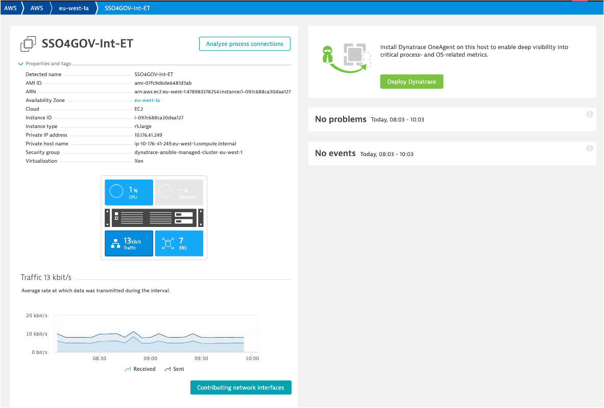
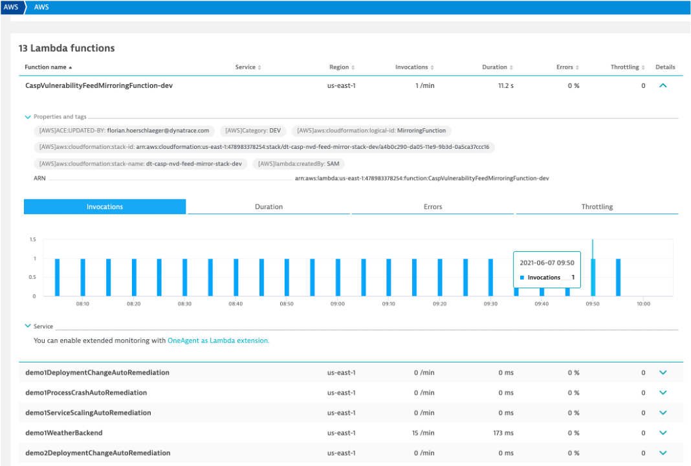
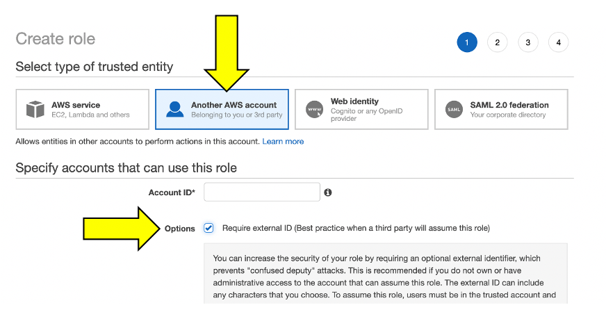
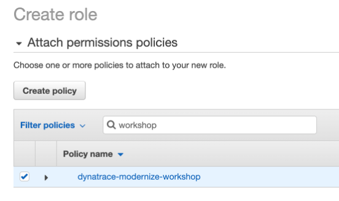
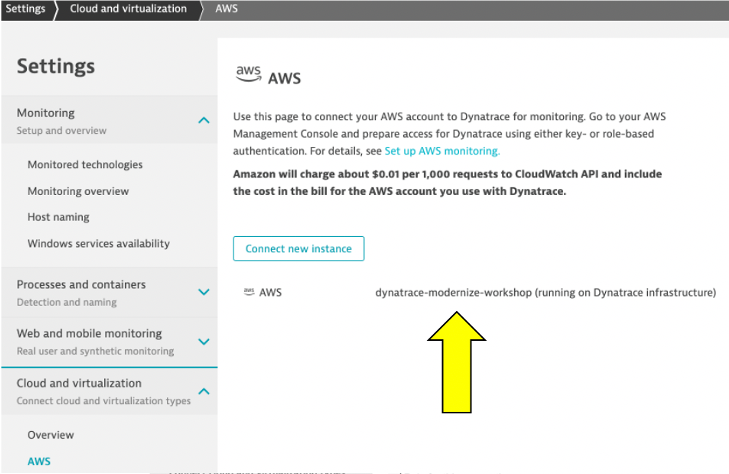
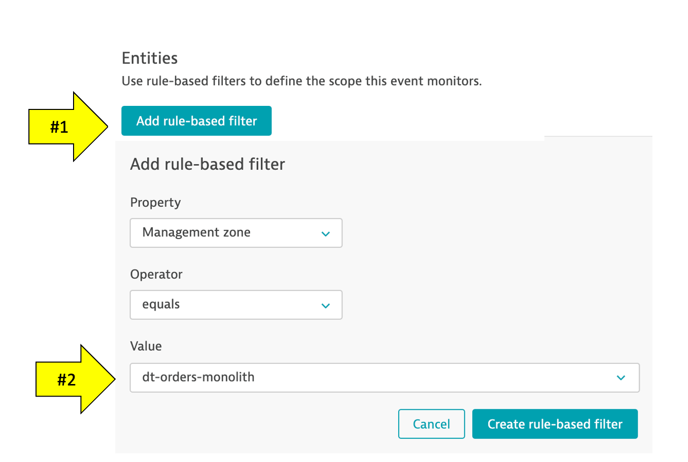

For intelligent monitoring of services running in Amazon cloud, you can integrate Dynatrace with Amazon Web Services (AWS). AWS integration helps you stay on top of the dynamics of your data center in the cloud.
Objectives of this Lab
üî∑ Review how Dynatrace integrates with AWS CloudWatch
üî∑ Review how Metric events for alerts
In addition to monitoring your AWS workloads using OneAgent, Dynatrace provides integration with AWS CloudWatch which adds infrastructure monitoring to gain insight even into serverless application scenarios.
üëç How this helps
Dynatrace brings value by enriching the data from AWS CloudWatch extending observability into the platform with additional metrics for cloud infrastructure, load balancers, API Management Services, and more.
These metrics are managed by Dynatrace's AI engine automatically and this extended observability improves operations, reduces MTTR and increases innovation.
Here is an example from another environment.

Hosts regional page
Notice the following details: 1. A summary of type and status is shown
- A running average for virtual machines 1. A table of host with AWS monitor metrics summarized. Notice that both hosts with and without an OneAgent are both shown

EC2 example
Here is an example of a host with no OneAgent.
Notice the following details: 1. Expand the properties to see more details 1. All the AWS CloudWatch metrics are viewable as time-series data

Lambda example
Here is a list of the Lambda functions. Notice tags and time-series data.

Preset dashboards
As AWS services are enabled, Dynatrace will enable preset dashboards automatically. These can be cloned and customized or hidden as required. Here is one example:

To see more dashboards, navigate to this repository: * https://github.com/Dynatrace/snippets/tree/master/product/dashboarding/aws-supporting-services
There are several ways one can configure the Dynatrace AWS monitor, but for this workshop we will use a quick solution using AWS Role based access following these basic steps:
- Create AWS IAM policy for monitoring
- Start the creation of a new AWS role for monitoring
- Start the creation of a Dynatrace AWS connection and generate connection token
- Complete AWS policy role setup by adding the Dynatrace token and attaching AWS policy
- Complete the Dynatrace Connection setup by adding the AWS account
Step 1 of 5: Create AWS IAM policy for monitoring
The AWS monitoring policy defines the minimum scope of permissions you need to give to Dynatrace to monitor the services running in your AWS account. Create it once and use anytime when enabling Dynatrace access to your AWS account.
- Go to
Identity and Access Management (IAM)in your Amazon Console. - Go to
Policiesand click theCreate policybutton.

- Select the JSON tab, and paste this predefined policy from the box below.

{
"Version": "2012-10-17",
"Statement": [
{
"Sid": "VisualEditor0",
"Effect": "Allow",
"Action": [
"acm-pca:ListCertificateAuthorities",
"apigateway:GET",
"apprunner:ListServices",
"appstream:DescribeFleets",
"appsync:ListGraphqlApis",
"athena:ListWorkGroups",
"autoscaling:DescribeAutoScalingGroups",
"cloudformation:ListStackResources",
"cloudfront:ListDistributions",
"cloudhsm:DescribeClusters",
"cloudsearch:DescribeDomains",
"cloudwatch:GetMetricData",
"cloudwatch:GetMetricStatistics",
"cloudwatch:ListMetrics",
"codebuild:ListProjects",
"datasync:ListTasks",
"dax:DescribeClusters",
"directconnect:DescribeConnections",
"dms:DescribeReplicationInstances",
"dynamodb:ListTables",
"dynamodb:ListTagsOfResource",
"ec2:DescribeAvailabilityZones",
"ec2:DescribeInstances",
"ec2:DescribeNatGateways",
"ec2:DescribeSpotFleetRequests",
"ec2:DescribeTransitGateways",
"ec2:DescribeVolumes",
"ec2:DescribeVpnConnections",
"ecs:ListClusters",
"eks:ListClusters",
"elasticache:DescribeCacheClusters",
"elasticbeanstalk:DescribeEnvironmentResources",
"elasticbeanstalk:DescribeEnvironments",
"elasticfilesystem:DescribeFileSystems",
"elasticloadbalancing:DescribeInstanceHealth",
"elasticloadbalancing:DescribeListeners",
"elasticloadbalancing:DescribeLoadBalancers",
"elasticloadbalancing:DescribeRules",
"elasticloadbalancing:DescribeTags",
"elasticloadbalancing:DescribeTargetHealth",
"elasticmapreduce:ListClusters",
"elastictranscoder:ListPipelines",
"es:ListDomainNames",
"events:ListEventBuses",
"firehose:ListDeliveryStreams",
"fsx:DescribeFileSystems",
"gamelift:ListFleets",
"glue:GetJobs",
"inspector:ListAssessmentTemplates",
"kafka:ListClusters",
"kinesis:ListStreams",
"kinesisanalytics:ListApplications",
"kinesisvideo:ListStreams",
"lambda:ListFunctions",
"lambda:ListTags",
"lex:GetBots",
"logs:DescribeLogGroups",
"mediaconnect:ListFlows",
"mediaconvert:DescribeEndpoints",
"mediapackage-vod:ListPackagingConfigurations",
"mediapackage:ListChannels",
"mediatailor:ListPlaybackConfigurations",
"opsworks:DescribeStacks",
"qldb:ListLedgers",
"rds:DescribeDBClusters",
"rds:DescribeDBInstances",
"rds:DescribeEvents",
"rds:ListTagsForResource",
"redshift:DescribeClusters",
"robomaker:ListSimulationJobs",
"route53:ListHostedZones",
"route53resolver:ListResolverEndpoints",
"s3:ListAllMyBuckets",
"sagemaker:ListEndpoints",
"sns:ListTopics",
"sqs:ListQueues",
"storagegateway:ListGateways",
"sts:GetCallerIdentity",
"swf:ListDomains",
"tag:GetResources",
"tag:GetTagKeys",
"transfer:ListServers",
"workmail:ListOrganizations",
"workspaces:DescribeWorkspaces"
],
"Resource": "*"
}
]
}
- You can skip over the
Add tagspage - One the
Review policypage, use the policy name ofdynatrace_monitoring_policy

- Click
Create policybutton.
Step 2 of 5: Start the creation of a new AWS role for monitoring
To give Dynatrace SaaS the role-based monitoring access to your AWS account, you need to create a dedicated monitoring role for Dynatrace in your AWS account. Dynatrace will use this role to authenticate in your AWS environment with the scope of permissions as defined by the monitoring policy.
- Go to
Identity and Access Management (IAM)in your Amazon Console. - Go to
Rolesand click thecreate rolebutton.

- Paste
509560245411into theAccount IDfield - Select the
Another AWS accounttile as to establish trust with the Dynatrace account. - Select the
Require external IDcheckbox - Keep this page open and move to next section

Step 3 of 5: Start the creation of a Dynatrace AWS connection and generate connection token
In you don't have it already, open another browser tab and sign in to Dynatrace
1 . Once logged in, go to Settings -> Cloud and virtualization -> AWS
2 . Click Connect new instance button
3 . Enter the name for this connection as dynatrace-modernize-workshop
4 . Select Role based authentication method.
5 . click the Generate token button

6 . Leave IAM role and AWS Account blank for now and click the Copy button next to the generated token.
Keep this browser window open. We will come back to it shortly to copy the Token and test the connection.
Step 4 of 5: Complete AWS policy role setup by adding the Dynatrace token and attaching AWS policy
Now back in the AWS console tab Create Role page you already have open, enter these values:
Paste the Token value that you just copied from your Dynatrace AWS connection page to the External ID field
Your page should look like this:

- Now click the
Next: Permissionsbutton on the bottom - On the
Attach permissionspolicies page, choose the monitoring policy you created earlier. Search for:dynatrace_monitoring_policy. Choose then checkbox next to it and then click the Next: Review button.

- Now click the
Next: Tagsbutton on the bottom - On the
Add Tagspage, leave the defaults and click theNext: Reviewbutton on the bottom - On the
Review page, provide the role name of:dynatrace_monitoring_role.
The role name, trusted entities and policy should have values as shown here.
- Click the
Create Rolebutton.
Step 5 of 5: Complete the Dynatrace Connection setup by adding the AWS account
Now that we have the AWS role, it's time to connect Dynatrace to your Amazon AWS account using that role.
- Go back on the Dynatrace connection page you still have open
- In the Role field, use the name of the role you created easier:
dynatrace_monitoring_role - The
Account IDis the AWS account you want us to pull metrics from. To get your Account ID, go to your AWS Cloudshell and type in this command and copy theAccountvalue from the JSON output as shown here. aws sts get-caller-identity
The output will look like and the Account = 999111222333
{
"UserId": "AKDA4GOORJDPOW3CNKDSKD7:tom.jones@mycompany.com",
"Account": "999111222333",
"Arn": "arn:aws:sts::838488672964:assumed-role/dtRoleAccountAdmin/tom.jones@mycompany.com"
}
- Your
Connection pageshould now look like this:

- Click the
Connectbutton to verify and once verified, click theSavebutton.
If successful, your should see the configuration now on the AWS connections page:

On the far left Dynatrace menu, navigate to the Infrastructure -> AWS menu.

You may see no data initially as seen here. This is because Dynatrace makes Amazon API requests every 5 minutes, so it might take a few minutes for data to show until we are done with application setup on AWS.

Once data is coming in, the dashboard pages will look similar to what is shown below.


Review collected metrics
Once data starts to be collected, click in the blue availability zone section located under the grey header labeled EC2 and you should see the list of availability zones below. Click on us-west-2c and the EC2 instances will be listed.

Click on an EC2 instance, and you will see how this host still is represented in the same Host view that we saw earlier with the host running the OneAgent. The basic CPU and memory metrics from CloudWatch are graphed for you. What is GREAT, is that this host is being monitored automatically by the Dynatrace AI engine and can raise a problem when there are anomalies.

üëç How this helps
The AWS monitor is a central way to get a picture and metrics for the AWS resources running against your accounts as you migrate.
Read more about how to scale your enterprise cloud environment with enhanced AI-powered observability of all AWS services in this Dynatrace blog
Dynatrace Davis automatically analyzes abnormal situations within your IT infrastructure and attempts to identify any relevant impact and root cause. Davis relies on a wide spectrum of information sources, such as a transactional view of your services and applications, as well as all on events raised on individual nodes within your Smartscape topology.
There are two main sources for single events in Dynatrace:
- Metric-based events (events that are triggered by a series of measurements)
- Events that are independent of any metric (for example, process crashes, deployment changes, and VM motion events)
Custom metric events are configured in the global settings of your environment and are visible to all Dynatrace users in your environment.
1. Setup Custom metric alerting for AWS
- To add custom alerts, navigate to
Settings --> Anomaly Detection --> Custom Events for Alertingmenu. - Click the
Create custom event for alertingbutton.

- In the
Metricdropdown list, typeEC2 CPU usage %and pick theCloud platforms > AWS > EC2 > CPU > usageoption and PickAverage

- Click
Add rule-basebutton and update as shown below

- Choose
Static thresholdand update as shown below

- Add the
Event Descriptionto have thetitleandseverity = CUSTOM ALERTas shown below.

Notice the Alert preview chart that helps you in reviewing these settings

- Save your changes
- Add another rule, with everything the same, except for the
Event Descriptionto have thetitleandseverity = RESOURCEas shown below.

- Save your changes and the list should look as shown below.

2. SSH to monolith host
Run this command to get the command to SSH into the monolith host.
cd ~/aws-modernization-dt-orders-setup/learner-scripts/
./show-app-urls.sh
From the output you should see a command like ssh -i "~/aws-modernization-dt-orders-setup/gen/
Copy and paste that command to SSH to the monolith VM. You should see output like this and b e presented another command prompt.
Welcome to Ubuntu 18.04.4 LTS (GNU/Linux 4.15.0-1065-aws x86_64)
...
...
To run a command as administrator (user "root"), use "sudo <command>".
See "man sudo_root" for details.
ubuntu@ip-10-0-0-118:~$
- Trigger a CPU problem ————————
In the shell, copy all these lines and run them:
yes > /dev/null &
yes > /dev/null &
yes > /dev/null &
To verify, run this command:
ps -ef | grep yes
The output should look like this:
ubuntu 5802 5438 99 20:48 pts/0 00:00:05 yes
ubuntu 5805 5438 89 20:48 pts/0 00:00:04 yes
ubuntu 5806 5438 97 20:48 pts/0 00:00:03 yes
ubuntu 5818 5438 0 20:48 pts/0 00:00:00 grep --color=auto yes
3 . Back in Dynatrace within the host view, the CPU should now be high as shown below

4 . It may take a minute or so, but you will get two problem cards as shown below. #1 is the alert from the severity = RESOURCE where Davis was invoked, and #2 is the alert from severity = CUSTOM ALERT.

4. Review Problem Notifications
1 . Navigate to Settings --> Integrations --> Problem Notifications
2 . Read the overview and then click the Add Notification button
3 . Click various Notification types from the drop down to review the configurations inputs.
4 . For the Custom integration type, review the option to customize the payload.
5 . Notice how you can choose the Alert profile, but you only have default
- Review Alerting Profiles —————————
1 . Navigate to Settings --> Alerting --> Alerting profiles
2 . Read the overview and then expand the default rule.
3 . Now add one, by clicking on the Add alerting profile button
4 . Review the options to choose severity rules and filters
6. Stop the CPU problem
To stop the problem, you need to kill the processes. To do this:
1 . Back in the CloudShell, run this command to get the process IDs ps -ef | grep yes
2 . For each process, copy the process ID and run kill
For example:
# If output is this...
ubuntu@ip-10-0-0-118:~$ ps -ef | grep yes
ubuntu 5802 5438 99 20:48 pts/0 00:00:05 yes
ubuntu 5805 5438 89 20:48 pts/0 00:00:04 yes
ubuntu 5806 5438 97 20:48 pts/0 00:00:03 yes
# Then run...
kill 5802
kill 5805
kill 5806
3 . Verify they are gone by running this again ps -ef | grep yes
4 . Verify that CPU in Dynatrace goes to normal and the problems will eventually automatically close
7. Exit the SSH
Simply type exit to exit the VM and return the CloudShell.
Summary
In this section, you should have completed the following:
✅ Review how Dynatrace integrates with AWS CloudWatch
✅ Review how AWS CloudWatch metrics can be configured as Metric events for alerts